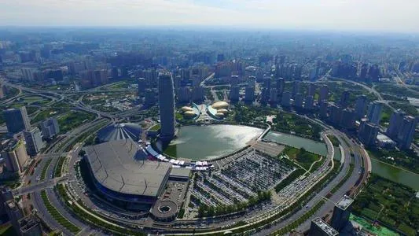

郑州工博会：郑州铆定“头部企业”招商 助推高质量发展
首页 / 郑州工博会：郑州铆定“头部企业”招商 助推高质量发展
4月22日，一场在郑州举行的集中签约仪式格外引人注目：郑州市政府与紫光集团、浪潮、富士康、中软等企业举行集中签约仪式，总投资额213.8亿元的6个先进制造业项目落地郑州。
“根据协议，紫光集团将在郑州高新区设立项目公司，负责智慧计算终端全球总部基地项目的运营，项目公司将在未来10年内针对研发、生产、人才、生态等方面的建设，预计累计投入近100亿元，助力郑州市经济结构调整与新旧动能转换。”郑州高新区相关负责人介绍。
与紫光集团项目一起签约的，还有浪潮集团生产基地及生态基地、富泰华精密电子（郑州）有限公司5G手机精密机构件、东风日产郑州工厂发动机扩能、中软国际“中原数字总部”基地、新郑市众钛300万平方米柔性线路板等项目——投资规模大、技术含量高、发展前景好，对郑州统筹推进常态化疫情防控和经济社会发展、高质量发展先进制造业具有重要意义。
“我们目前招商引资的一个重要理念就是抓‘头部企业’，‘头部企业’带动培育产业生态，是现代经济特别是新经济发展的一个典型特征。比如引进阿里巴巴、华为等行业‘头羊’，不但带动数字经济规模突破300亿元，也加速我们培育网络安全、人工智能等5个千亿级新兴产业集群。”郑州市商务局相关负责人说。
据介绍，郑州市在近年来的招商引资工作中，聚焦产业基础高级化、产业链现代化，着力以招商引资做强优势产业、做大新兴产业、做优传统产业。
同时，积极对接融入黄河流域生态保护和高质量发展、中部地区崛起等国家战略，建立总规模超5000亿元的动态招商项目库，涵盖新基建、先进制造、科技研发、文旅商贸等领域，去年以来引进项目500多个、合同投资总额7600多亿元。
郑州市创新方式“招商”，实行政府、企业、协会、驻外机构联动招商，去年以来招商到位外来资金突破2500亿元、开工项目投资突破3000亿元。创新“人才+资本”“技术+资本”招商模式，构建了企业、平台、人才、机构“四个一批”引进格局，累计引进海内外高层次人才近千人、签约落地合作项目400多个；发挥1000亿元国家中心城市产业基金撬动作用，依据项目潜力和成熟度，科学组建子基金，运用市场化方式破解招商项目落地资金难题，目前子基金规模突破500亿元。
为了确保招商项目招得来、落得下、早开工、快见效，郑州市在优化营商环境上也下足了功夫。以“一网通办、一次办成”改革为带动，全力打造市场化法治化国际化营商环境，为招商项目建设全程提供“店小二”服务，企业吹哨、部门报到，有求必应、无事不扰；启动规划和土地管理等制度改革，探索推行“标准地”模式，确保签约即落地、拿地即开工；实行一个项目、一个领导、一套班子、一套方案、一抓到底的“五个一”机制，构建了“项目落地—要素保障—建设投产”的高效招商引资责任链条。
精准破解招什么、怎么招、落在哪、怎么保，郑州市今年仅3月、4月两次集中签约总额就达678亿元，不断为国家中心城市建设注入新动能、增添新动力。
文章来源：河南日报